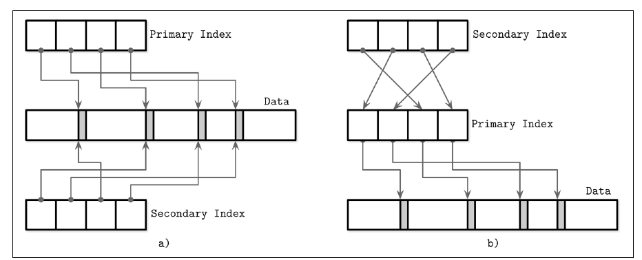

Data files and index files
Primary index as an indirection
Should secondary indexes point at records directly or through the primary index? (p. 20)
| Direct offsets | Primary-key indirection | |
|---|---|---|
| Reads | Fewer seeks | Two lookups (secondary, then primary) |
| Updates and relocations | Every index pointer must be updated | Only the primary index changes |
| Suits | Read-mostly workloads with few indexes | Write-heavy workloads with many indexes; e.g. MySQL InnoDB |


A hybrid stores both an offset and the primary key. It tries the offset first and, if it's stale, goes through the primary index and repairs the offset (p. 21).